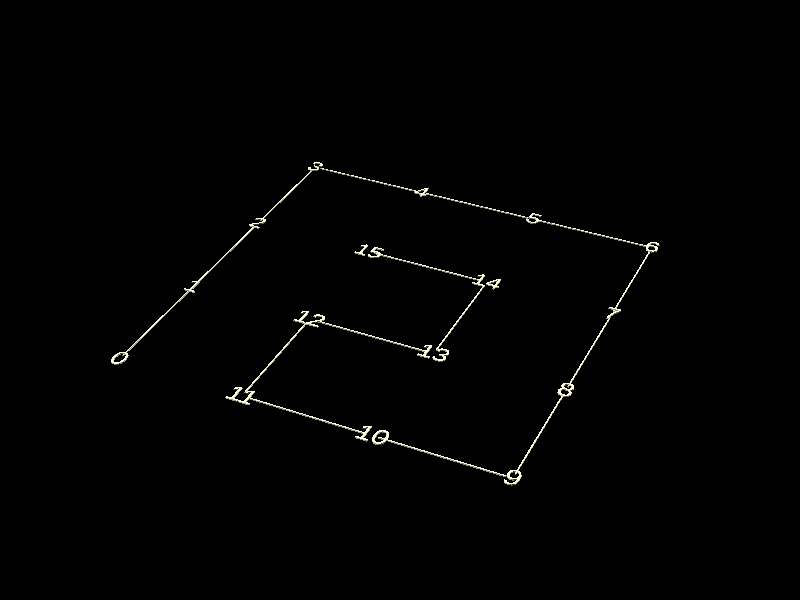
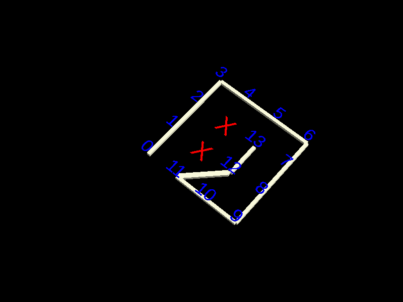
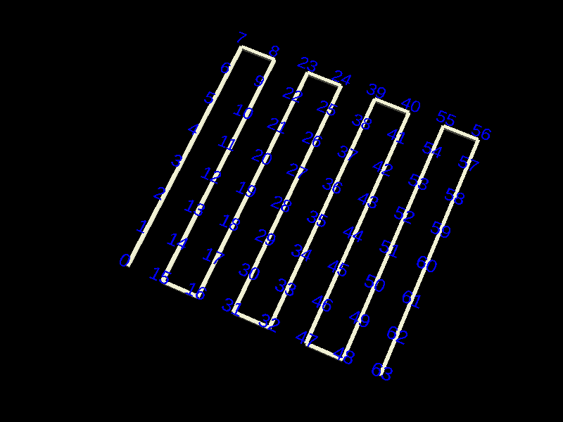

| Test 9: Hamiltonian Loop on Grid | Score: 0.00 / 10 | ||
|---|---|---|---|
Typical Prompt: You have a 4*4 grid of unit squares, with cell coordinates (x, y) where 1 <= x <= 4, 1 <= y <= 4. Draw a single closed path that: - Moves from cell to cell using only side-adjacent moves. - Visits every cell exactly once. - Returns to its starting cell (so the path is a loop). - The last cell in your list must be side-adjacent to the first. Answer format: Give an ordered list of the 16 cell coordinates for the loop, starting anywhere, for example: 1,1 1,2 1,3 ... 2,1 |
Prompt Changes: Grid size increases across subpasses, with a missing chunk in the final subpasses |
||
| Subpass 0 Parameters: 4x4 grid View exact prompt View raw AI output View chain of thought This is a known simple problem and I'd expect even a 5 year old to solve the simplest case. Observing the Chain-Of-Thought for the simple models even shows them trying to find existing solutions on the web to copy paste. It's that well known. As we crank it up, things get harder. LLMs may truncate or lose focus on the longer paths, and some of the complex paths, especially with holes, require novel solutions, as without any spatial reasoning, this becomes NP-Complete, while a child can solve it with a crayon and a minutes. Using Claude Opus 4.5, Windsurf, $40 of API credits and a day of my life explaining algorithms for an AI to implement, I was able to build a solver for this that can solve simple sparse grids in a few minutes (placebo_data/q9.py), this is probably the peak of what I'd expect an AI could do. |
0.0000 didn't step side-adjacent [1, 1] from [2, 3] |
 |
|
| Subpass 1 Parameters: 4x4 grid with 2 cells blocked .... .X.. .X.. .... View exact prompt View raw AI output View chain of thought |
0.0000 didn't step side-adjacent [1, 1] from [3, 3] |
 |
|
| Subpass 2 Parameters: 8x8 grid View exact prompt View raw AI output View chain of thought |
0.0000 didn't step side-adjacent [1, 1] from [8, 1] |
 |
|
| Subpass 3 Parameters: 12x12 grid View exact prompt View raw AI output View chain of thought |
0.0000 Skipped due to earlyFail (first subpass scored under 0%) |
N/A (LLM did not answer) | N/A (Test forfeited) |
| Subpass 4 Parameters: 16x16 grid View exact prompt View raw AI output View chain of thought |
0.0000 Skipped due to earlyFail (first subpass scored under 0%) |
N/A (LLM did not answer) | N/A (Test forfeited) |
| Subpass 5 Parameters: 16x16 grid with cells (3,3) and (3,4) removed ................ ................ ..X............. ..X............. ................ ................ ................ ................ ................ ................ ................ ................ ................ ................ ................ ................ View exact prompt View raw AI output View chain of thought |
0.0000 Skipped due to earlyFail (first subpass scored under 0%) |
N/A (LLM did not answer) | N/A (Test forfeited) |
| Subpass 6 Parameters: 16x16 grid with cells (12, 6), (12, 6), (5, 6), (5, 5), (7, 10), (8, 10) are removed. ................ ................ ....X......X.... ....X......X.... ................ ................ ................ ................ ................ ......XX........ ................ ................ ................ ................ ................ ................ View exact prompt View raw AI output View chain of thought |
0.0000 Skipped due to earlyFail (first subpass scored under 0%) |
N/A (LLM did not answer) | N/A (Test forfeited) |
| Subpass 7 Parameters: 16x16 grid where various holes exist. ................ .X............X. ................ ................ .X............X. ................ ................ ................ ................ ................ ................ .X............X. ................ ................ .X............X. ................ View exact prompt View raw AI output View chain of thought |
0.0000 Skipped due to earlyFail (first subpass scored under 0%) |
N/A (LLM did not answer) | N/A (Test forfeited) |
| Subpass 8 Parameters: 16x16 grid where various holes exist. ................ .X............X. ................ ................ .X............X. ................ ................ .......XX....... .......XX....... ................ ................ .X............X. ................ ................ .X............X. ................ View exact prompt View raw AI output View chain of thought |
0.0000 Skipped due to earlyFail (first subpass scored under 0%) |
N/A (LLM did not answer) | N/A (Test forfeited) |
| Subpass 9 Parameters: 16x16 grid where various holes exist. ................ .XX...........X. .XX............. ................ XXXX..........X. ................ ................ .......XX....... .......XX....... ................ ................ XX............X. XX............X. XX............X. XX............X. XX.............. View exact prompt View raw AI output View chain of thought |
0.0000 Skipped due to earlyFail (first subpass scored under 0%) |
N/A (LLM did not answer) | N/A (Test forfeited) |
| Total Tests | Overall Score | Percentage |
|---|---|---|
| 57 | 0.00 / 10 | 0.0% |